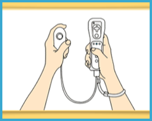

5 |
Configuration des contrôles |
 |
|

Comment contrôler le jeu
Ce jeu se joue en utilisant le style Nunchuk. Opérations de menu Pour sélectionner les onglets d'option - Pointer sur l'un des onglets d'option et appuyer sur le bouton A. - Alternativement, utiliser la croix directionnelle pour changer la sélection et appuyer sur le bouton A pour confirmer. - Appuyer sur le bouton B pour revenir au menu précédent (si applicable). Opérations de jeu - Choisir une unité en déplaçant le curseur sous cette unité et appuyer sur le bouton A. - Annuler la sélection actuelle en appuyant sur le bouton B. - Pour changer la caméra, appuyez sur le bouton C pour afficher une vue de gauche ou appuyez sur le bouton Z pour une vue de droite. - Appuyer sur le bouton A pour réaliser l'attaque primaire. - Appuyer sur le bouton B pour réaliser l'attaque secondaire. - Appuyer sur le bouton Z pour bloquer Appuyer sur le bouton + dans l'un des modes pour afficher l'écran du menu Pause. Appuyer sur le bouton HOME dans l'un des modes pour afficher l'écran du Menu HOME. |
 |
 |
 |